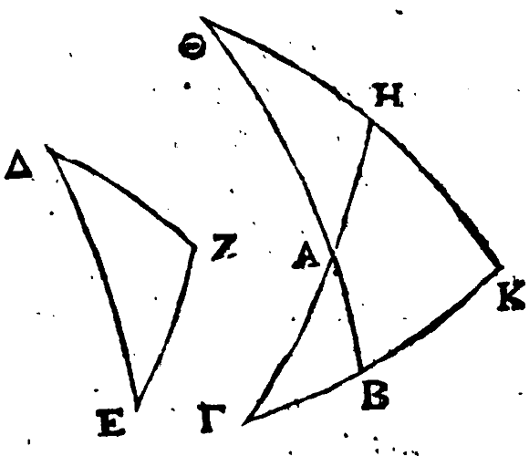

Proposition III.2 — Theorem: The Spherical Law of Sines¶
Menelai Alexandrini Sphaericorum Lib. III Prop. II. Theor. (Halley 1758, pp. 86–87)


Enunciation (Halley 1758, p. 86)
If of two spherical triangles two angles be equal, and two other angles be either equal to one another or taken together equal to two right angles: I say that the sines of the sides which are subtended by the two equal angles are to the sines of the sides which are subtended by the two other angles (either equal or equal to two right angles) respectively, in the same ratio; and conversely.
Let \(\triangle \mathrm{AB\Gamma}\) and \(\triangle \mathrm{\Delta EZ}\) be two spherical triangles, and let angle \(\angle \mathrm{A}\) of the one be equal to angle \(\angle \mathrm{\Delta}\) of the other; and let the two angles \(\angle \mathrm{\Gamma}\) and \(\angle \mathrm{Z}\) either be equal to one another or together equal to two right angles: I say that the sine of arc \(\widehat{\mathrm{AB}}\) is to the sine of arc \(\widehat{\mathrm{B\Gamma}}\) as the sine of arc \(\widehat{\mathrm{\Delta E}}\) is to the sine of arc \(\widehat{\mathrm{EZ}}\).
Produce arc \(\mathrm{A\Gamma}\) to \(\mathrm{H}\), and \(\mathrm{BA}\) to \(\mathrm{\Theta}\), and make arc \(\widehat{\mathrm{AH}}\) equal to arc \(\widehat{\mathrm{\Delta Z}}\), and angle \(\angle \mathrm{AH\Theta}\) equal to angle \(\angle \mathrm{EZ\Delta}\); and complete the figure by producing arcs \(\mathrm{\Gamma B}\), \(\mathrm{\Theta H}\) to meet at \(\mathrm{K}\): then arc \(\widehat{\mathrm{A\Theta}}\) will be equal to arc \(\widehat{\mathrm{\Delta E}}\), as \(\widehat{\mathrm{\Theta H}}\) to arc \(\widehat{\mathrm{EZ}}\). Now since angles \(\angle \mathrm{B\Gamma A}\), \(\angle \mathrm{AH\Theta}\) are either equal
f. 0103 · p. 87to one another or together equal to two right angles, arcs \(\widehat{\mathrm{\Gamma K}}, \widehat{\mathrm{KH}}\) will either together be equal to a semicircle, or be equal to one another; and therefore the sine of arc \(\widehat{\mathrm{\Gamma K}}\) is equal to the sine of arc \(\widehat{\mathrm{KH}}\). But by the figure of the preceding proposition, the ratio of the sine of arc \(\widehat{\mathrm{\Gamma K}}\) to the sine of arc \(\widehat{\mathrm{B\Gamma}}\) is compounded of the ratio of the sine of arc \(\widehat{\mathrm{KH}}\) to the sine of arc \(\widehat{\mathrm{H\Theta}}\) and the ratio of the sine of arc \(\widehat{\mathrm{\Theta A}}\) to the sine of arc \(\widehat{\mathrm{AB}}\): canceling therefore the equal sines of arcs \(\widehat{\mathrm{\Gamma K}}, \widehat{\mathrm{KH}}\), the sine of arc \(\widehat{\mathrm{H\Theta}}\) will be to the sine of arc \(\widehat{\mathrm{B\Gamma}}\) as the sine of arc \(\widehat{\mathrm{A\Theta}}\) is to the sine of arc \(\widehat{\mathrm{AB}}\), and alternando (κὰτ ἐναλλάξ). But arc \(\widehat{\mathrm{H\Theta}}\) is equal to arc \(\widehat{\mathrm{EZ}}\), as \(\widehat{\mathrm{A\Theta}}\) is to arc \(\widehat{\mathrm{\Delta E}}\): therefore as the sine of arc \(\widehat{\mathrm{AB}}\) is to the sine of arc \(\widehat{\mathrm{B\Gamma}}\), so is the sine of arc \(\widehat{\mathrm{\Delta E}}\) to the sine of arc \(\widehat{\mathrm{EZ}}\). Quod erat demonstrandum.
Moreover, if we suppose angles \(\angle \mathrm{A}, \angle \mathrm{\Delta}\) to be equal, and that as the sine of arc \(\widehat{\mathrm{AB}}\) is to the sine of arc \(\widehat{\mathrm{B\Gamma}}\), so is the sine of arc \(\widehat{\mathrm{\Delta E}}\) to the sine of arc \(\widehat{\mathrm{EZ}}\): I say that angles \(\angle \mathrm{\Gamma}, \angle \mathrm{Z}\) are either equal or taken together equal to two right angles.
Let the same things be done as were done before; and let as the sine of arc \(\widehat{\mathrm{\Gamma B}}\) is to the sine of arc \(\widehat{\mathrm{AB}}\), so be the sine of arc \(\widehat{\mathrm{H\Theta}}\) to the sine of arc \(\widehat{\mathrm{A\Theta}}\), κὰτ ἐναλλάξ: and comparing the ratios agreeing with the figure of Proposition I, it will follow, by converting the preceding argument, that the sine of arc \(\widehat{\mathrm{KH}}\) is equal to the sine of arc \(\widehat{\mathrm{K\Gamma}}\); and consequently that angle \(\angle \mathrm{\Theta HA}\) is equal to angle \(\angle \mathrm{A\Gamma B}\)—that is, that angle \(\angle \mathrm{Z}\) is equal to angle \(\angle \mathrm{\Gamma}\), or taken together they are equal to two right angles. Quod erat demonstrandum.
Corollary. In every spherical triangle, therefore, the sines of the sides are as the sines of the angles opposite to them.